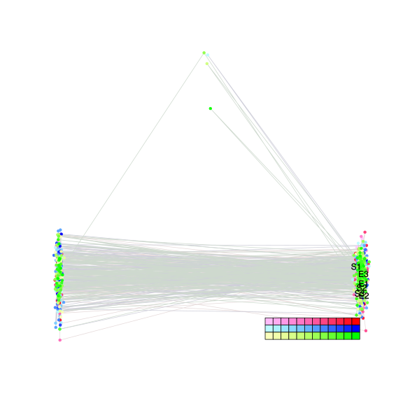
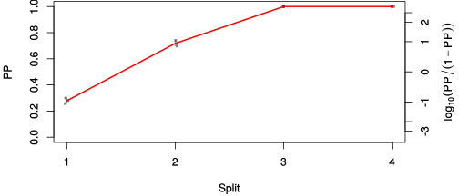
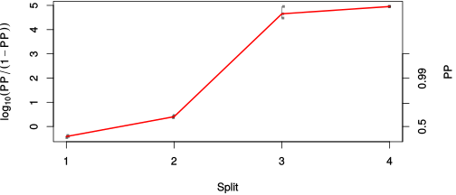

| chain # | burnin | subsample | Iterations (remaining) | command line | subdirectory | directory |
|---|---|---|---|---|---|---|
| 1 | 10000 | 1 | 90000 | bali-phy E1_AA_red3_BetaGamma.fas -s 86345 -n BetaGamma_c1 | BetaGamma_c1-1 | /DATA/work/ONCOGENEVOL/database/trees/Bali-Phy/red3/E1 |
| 2 | 10000 | 1 | 90000 | bali-phy E1_AA_red3_BetaGamma.fas -s 94373 -n BetaGamma_c2 | BetaGamma_c2-1 | /DATA/work/ONCOGENEVOL/database/trees/Bali-Phy/red3/E1 |
| 3 | 10000 | 1 | 90000 | bali-phy E1_AA_red3_BetaGamma.fas -s 74747 -n BetaGamma_c3 | BetaGamma_c3-1 | /DATA/work/ONCOGENEVOL/database/trees/Bali-Phy/red3/E1 |
| P(data|M) = -7034.064 +- 1.269 | Complete sample: 5 topologies | 95% Bayesian credible interval: 2 topologies |

Phylogeny Distribution

| Partition support: Summary |
| Partition support graph: SVG |
| 50% consensus | Newick (+PP) | SVG | |||||
| 66% consensus | Newick (+PP) | SVG | |||||
| 80% consensus | Newick (+PP) | SVG | |||||
| 90% consensus | Newick (+PP) | SVG | |||||
| 95% consensus | Newick (+PP) | SVG | |||||
| 99% consensus | Newick (+PP) | SVG | |||||
| 100% consensus | Newick (+PP) | SVG | |||||
| MAP | Newick (+PP) | SVG | |||||
| greedy | Newick (+PP) | SVG |
{kind=link}
{kind=link}
{kind=link}
{kind=link}
{kind=link}
{kind=link}
{kind=link}
{kind=link}
Alignment Distribution
Partition 1
| Diff | Min. %identity | # Sites | Constant | Informative | ||||
|---|---|---|---|---|---|---|---|---|
| Initial | FASTA | HTML | Diff | 4.44% | 623 | 1 (0.161%) | 80 (12.8%) | |
| Best (WPD) | FASTA | HTML | AU | 37.9% | 717 | 128 (17.9%) | 209 (29.1%) |


Mixing
| burnin (scalar) | ESS (scalar) | ESS (partition) | ASDSF | MSDSF | PSRF-CI80% | PSRF-RCF |
|---|---|---|---|---|---|---|
| 3903 | 258 | 643.240 | 0.011 | 0.022 | 1.008 | 1.009 |
Projection of RF distances for the first 3 chains3D | Variation of split PPs across chains |
Scalar variables
| Statistic | Median | 95% BCI | ACT | ESS | burnin | PSRF-CI80% | PSRF-RCF |
|---|---|---|---|---|---|---|---|
| prior | -573.6 | (-633.2, -514.7) | 651.8 | 414 | 3903 | 1.003 | 1.006 |
| prior_A1 | -555 | (-613.1, -496.8) | 668.8 | 403 | 374 | 1.003 | 1.008 |
| likelihood | -6990 | (-7033, -6949) | 1046 | 258 | 1065 | 1.008 | 1.009 |
| logp | -7563 | (-7604, -7527) | 105.7 | 2555 | 363 | 1 | 0.9957 |
| Heat.beta | 1 | ||||||
| Scale1 | 2.178 | (0.8531, 4.471) | 1 | 270003 | 99 | 1 | 1 |
| S1.F.pi.A | 0.06863 | (0.05758, 0.08046) | 9.432 | 28627 | 159 | 0.9996 | 0.9975 |
| S1.F.pi.R | 0.0337 | (0.02589, 0.04215) | 7.94 | 34004 | 208 | 1 | 1.002 |
| S1.F.pi.N | 0.04012 | (0.03232, 0.04845) | 8.778 | 30758 | 171 | 1 | 0.9971 |
| S1.F.pi.D | 0.06179 | (0.05094, 0.07304) | 11.36 | 23773 | 340 | 1 | 1.001 |
| S1.F.pi.C | 0.04441 | (0.03371, 0.05597) | 8.596 | 31411 | 326 | 1 | 1.003 |
| S1.F.pi.Q | 0.04039 | (0.03236, 0.04864) | 8.476 | 31853 | 457 | 0.9997 | 0.9994 |
| S1.F.pi.E | 0.05953 | (0.04939, 0.07009) | 8.491 | 31798 | 329 | 1 | 1.001 |
| S1.F.pi.G | 0.06008 | (0.04782, 0.07336) | 18.09 | 14928 | 470 | 0.9996 | 0.9979 |
| S1.F.pi.H | 0.02239 | (0.01627, 0.0292) | 7.836 | 34456 | 416 | 1 | 0.9948 |
| S1.F.pi.I | 0.04397 | (0.03486, 0.05351) | 8.776 | 30767 | 258 | 1 | 0.9957 |
| S1.F.pi.L | 0.09873 | (0.08436, 0.1142) | 7.868 | 34315 | 235 | 0.9999 | 1.001 |
| S1.F.pi.K | 0.05616 | (0.04623, 0.06658) | 8.235 | 32786 | 570 | 1 | 0.9991 |
| S1.F.pi.M | 0.02606 | (0.01955, 0.03326) | 8.239 | 32770 | 488 | 1 | 1 |
| S1.F.pi.F | 0.05517 | (0.04424, 0.06688) | 8.289 | 32573 | 295 | 0.9994 | 1.007 |
| S1.F.pi.P | 0.04091 | (0.03099, 0.05134) | 8.614 | 31344 | 493 | 0.9999 | 1.001 |
| S1.F.pi.S | 0.07624 | (0.06461, 0.08806) | 8.209 | 32892 | 209 | 0.9999 | 0.9994 |
| S1.F.pi.T | 0.05874 | (0.04861, 0.06931) | 8.25 | 32726 | 228 | 1 | 0.9968 |
| S1.F.pi.W | 0.01315 | (0.007537, 0.01957) | 8.147 | 33140 | 627 | 1 | 1.002 |
| S1.F.pi.Y | 0.03306 | (0.02479, 0.04211) | 8.018 | 33672 | 579 | 1.001 | 0.9912 |
| S1.F.pi.V | 0.06355 | (0.05227, 0.07519) | 10.11 | 26698 | 263 | 0.9998 | 0.9936 |
| I1.RS07.meanIndelLengthMinus1 | 2.038 | (1.322, 2.897) | 112.1 | 2408 | 242 | 1 | 1.004 |
| I1.RS07.logLambda | -3.693 | (-3.986, -3.411) | 152 | 1776 | 75 | 1.001 | 1.001 |
| |A1| | 706 | (684, 723) | 391.7 | 689 | 948 | 0.9474 | 0.9989 |
| #indels1 | 71 | (61, 79) | 655.3 | 412 | 711 | 0.8919 | 1.006 |
| |indels1| | 216 | (180, 251) | 191.1 | 1412 | 308 | 0.9783 | 1.004 |
| #substs1 | 1103 | (1084, 1123) | 474.1 | 569 | 461 | 0.974 | 0.9987 |
| Scale1*|T| | 2.368 | (2.209, 2.526) | 39.37 | 6857 | 205 | 1 | 0.9994 |
| |A| | 706 | (684, 723) | 391.7 | 689 | 948 | 0.9474 | 0.9989 |
| #indels | 71 | (61, 79) | 655.3 | 412 | 711 | 0.8919 | 1.006 |
| |indels| | 216 | (180, 251) | 191.1 | 1412 | 308 | 0.9783 | 1.004 |
| #substs | 1103 | (1084, 1123) | 474.1 | 569 | 461 | 0.974 | 0.9987 |
| |T| | 1.088 | (0.3866, 2.075) | 1 | 270003 | 99 | 1 | 0.9998 |